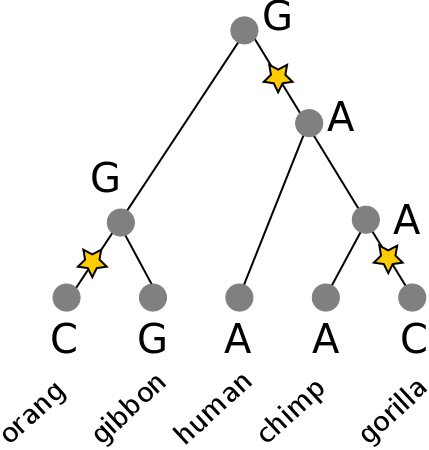

Fundamentals of Evolution
EEEB G6110
Session 4: Intro to phylogenetics
Today's topics
1. Recap: Tree thinking
2. Intro to phylogenetics
3. Intro to model based inference
Jupyter notebooks
Web-based environment for creating and sharing reproducible code. Our example explored tree-thinking and viewing trees as data using the toytree package in Python.

Tree thinking exercises
Reading trees involves interpreting the order in which lineages share common ancestors by tracing relationships backwards from the tips towards the root. Rotating nodes does not affect these relationships, even though the order of the tips changes. Which topology is different?

Trees as data
Phylogenetic trees are more than just pictures, they represent a data structure that can be interpreted and used in model-based analyses. Stored in Newick format.
Trees as data
Phylogenetic trees are more than just pictures, they represent a data structure that can be interpreted and used in model-based analyses. Stored in Newick format.
Quiz time!
Phylogenetic inference: why?
Much of evolutionary research involves reconstructing the past, or making inferences on the basis of relatedness/ancestry. Thus it is relevant to understand how evolutionary relationships are inferred, and the level of confidence we should place in various types of inference.

Phylogenetic inference: why?
Dating evolutionary events: when populations or species diverged; whether different lineages show correlated histories; to compare rates of divergence among lineages; to compare histories of different genes; to infer ancestral states (geography, traits).

Phylogenetic inference: why?
Comparative methods: species are non-independent data points. Some share more evolutionary history than others, i.e., diverged from a common ancestor more recently.
Example: Birds fly and lay eggs, mammals mostly do not fly or lay eggs. Is the correlation between flying and laying eggs an adaptation? Almost surely not, it is a coincident correlation due to the shared history of all mammals versus all birds, and the traits they inherited from their ancestors.
Phylogenetic inference: examples
Methods of phylogenetic inference, and model-based historical inferences using trees, are both highly active areas of research. Many new methods are published in the journal of Systematic Biology, while countless applied examples are published in various journals, including Evolution, Molecular Biology and Evolution, Molecular Phylogenetics and Evolution, Molecular Ecology, etc.
Phylogenetic inference: methods
Collect/measure homologous characters for some number of taxa. For DNA, identifying homology typically involves targeting regions of the genome using primers, or mapping sequenced reads from the genome to the same region of a reference genome. Either way, it is based on sequence similarity. This is typically followed by a more rigorous multiple sequence alignment.

Phylogenetic inference: methods
A general outline of phylogenetic inference:
1. Propose a starting tree (e.g., random or star).
2. Score based on some criterion (e.g., parsimony, likelihood, distance).
3. Modify to propose a new tree, return to step 2.
Phylogenetic inference: methods
Distance methods: build a tree based on pairwise distances (e.g., UPGMA and neighbor-joining).
Parsimony methods: search for best tree based on minimizing character changes along branches.
Likelihood/statistical methods: search for tree on which the observed data is most likely to have evolved under an assumed model of evolution.
Other methods: many are variants of likelihood statistical methods, but others exist as well, but the most popularly used are listed above.
Phylogenetic inference: distance methods (UPGMA)
1. A pairwise distance matrix is computed from characters.
2. New internal node is created joining the shortest distance between points. Their branch lengths are set to half the distance, and a new matrix is computed to this node using average distance to its descendants.
3. repeat from 1 until all internal nodes are added.

Phylogenetic inference: distance methods (neighbor-joining)
1. A pairwise distance matrix is computed from characters.
2. (Starting from a star-tree initially), join two nodes with smallest distance to create an ancestor, transform distance matrix so that all pairwise distances are retained (uses entire matrix not just pairs).
3. repeat from 1 until all internal nodes are added.
Phylogenetic inference: distance methods (summary)
shortcomings: They yield a single best tree but do not provide a score (e.g., likelihood) that could be used to compare against alternatives (how much better is it?)
Sensitive to model assumptions, such as molecular clock (UPGMA) or that distances are additive (i.e., when one gets longer another gets shorter; NJ).
strengths: it is very fast and computationally efficient. For this reason NJ has had a resurgence for use in population genomics where datasets ae very large and model assumptions are less likely to be violated among closely related populations (e.g., human populations).
Phylogenetic inference: Parsimony
A character matrix and a topology. Count the number of character state changes.

Phylogenetic inference: Parsimony
A character matrix and a topology. Count the number of character state changes.
Phylogenetic inference: Parsimony
A character matrix and a topology. Count the number of character state changes.

Phylogenetic inference: Parsimony
Parsimony principle:
The evolutionary tree that minimizes the net amount of evolution (fewest steps) should be preferred.
1. Propose a topology (e.g., randomly)
2. Calculate score (e.g., Fitch algorithm)
3. Propose new tree and repeat (test all or many trees).
Phylogenetic inference: Fitch algorithm
We can count the number of steps required without needing to know the root of the tree, or which characters are ancestral versus derived.
1. arbitrarily root the tree.
2. bottom-up pass: Build sets for each internal node of the observed states. Union of states if they are different, intersection of states if they share a state.
Phylogenetic inference: Fitch algorithm
We can count the number of steps required without needing to know the root of the tree, or which characters are ancestral versus derived.
3. top-down pass: Assign any nucleotide at the root set. To all children apply the same state as its parent if shared, else any other state in its set. Count transitions.
Is this better than an alternative tree?

Phylogenetic inference: methods
Parsimony's pitfall
It does not account for homoplasy (repeated mutations to the same site).

Reading for next session
Felsenstein, Joseph. 1981. “Evolutionary Trees from DNA Sequences: A Maximum Likelihood Approach.” Journal of Molecular Evolution 17 (6): 368–76. https://doi.org/10.1007/BF01734359.
O’Meara, Brian C. 2012. “Evolutionary Inferences from Phylogenies: A Review of Methods.” Annual Review of Ecology, Evolution, and Systematics 43 (1): 267–85. https://doi.org/10.1146/annurev-ecolsys-110411-160331.